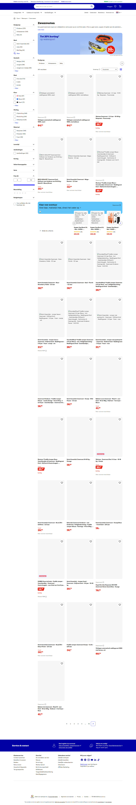
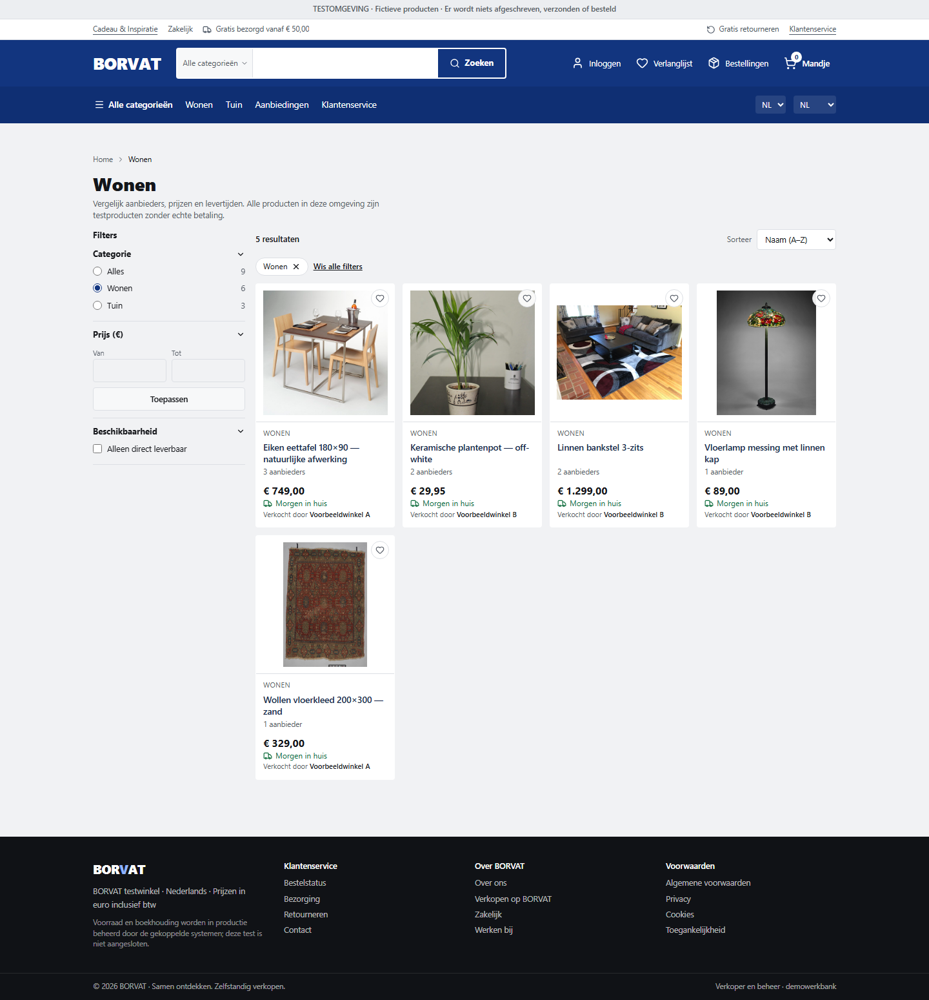
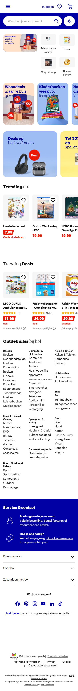
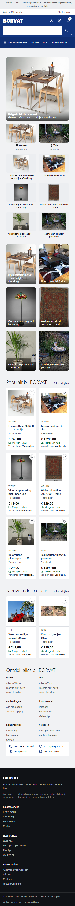
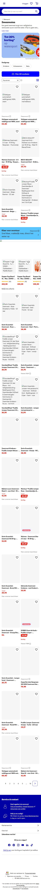
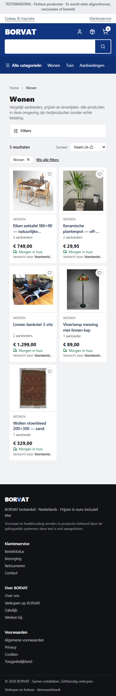

Owner directive: match the reference composition, keep the BORVAT identity.
Live bol.com is unreachable from this machine (IP address is blocked), so the reference is the
Wayback snapshot recorded below, rendered in a real Chromium at the same viewport as the local build.
Every capture is dated and full-length: nothing is cropped to hide a difference.
Startpagina
Referentie: archived snapshot of https://web.archive.org/web/20261005195203/https://www.bol.com/nl/nl/ — captured 1440×900, full page.
BORVAT: local build, same viewport, same scroll position.
Heights differ because the reference page is longer: 3214px vs 2256px.
bol.com (reference)BORVAT (this branch)
Difference blending: identical pixels render black, differences render bright.
This shows alignment and scale, not beauty.
Categorie / resultaten
Referentie: archived snapshot of https://web.archive.org/web/20260615045304/https://www.bol.com/nl/nl/l/zwemvesten/25311/ — captured 1440×900, full page.
BORVAT: local build, same viewport, same scroll position.
Heights differ because the reference page is longer: 8517px vs 1549px.
bol.com (reference)

BORVAT (this branch)

Difference blending: identical pixels render black, differences render bright.
This shows alignment and scale, not beauty.
Mobile 390
Same snapshot and same build at 390×844, full page.
Startpagina


left: reference · right: BORVAT
Categorie / resultaten


left: reference · right: BORVAT
Remaining differences
Area
Difference
Reason
Product detail page
No reference capture
No archived bol.com PDP returns 200 for this host: earlier attempts returned 404/403. The PDP was built from the same measured system, not compared pixel to pixel.
Cart
No reference capture
bol.com cart requires a session; the archived copy has no cart state. Our cart keeps seller grouping and per-seller subtotals by design.
Assortment depth
6-column rows partly filled
Nine articles, two categories. The grid rhythm matches; the volume does not.
Photography
Mixed studio and museum shots
Commons-licensed images only; two do not represent their article.
Ratings and reviews
Absent
The fixtures carry no review data, so no star row is rendered anywhere.